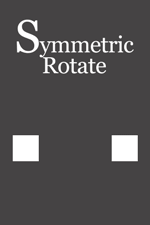
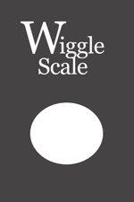

Now Loading...
Motion Ref
动效参考 — 73 种动效，按类别浏览
GitHub
移动系
位置变化 · 入场出场 · 引导视线
Move 移动
SymMove 对称移动
RepeatMove 重复移动
WiggleMove 摆动移动
DelayMove 延迟
旋转系
自转 · 公转 · 对称旋转
Rotate 旋转

SymRotate 对称旋转
RepeatRotate 重复旋转
WiggleRotate 摆动旋转
SolidRotation Z轴旋转
缩放系
大小变化 · 弹性 · 强调
Scale 缩放
SymScale 对称缩放
RepeatScale 重复缩放

WiggleScale 摆动缩放
Dot 网点
裁剪系
线条伸展 · 进度环 · 路径绘制
TrimLine 线条裁剪
TrimCircle 圆形裁剪
RepeatTrim 重复裁剪
TrimPie 扇形裁剪
FlowingLine 流动线条
模糊·光效系
虚化 · 发光 · 景深 · 聚焦
Blur 模糊
Opacity 透明度
FieldOfDepth 景深
MotionBlur 运动模糊
CrossBlur 交叉模糊
RadialBlur 缩放模糊
Glow 发光
Flare 镜头光晕
偏移·轨道系
路径运动 · 轨道 · 循环
Orbit 轨道旋转
Offset 偏移
Vegas 勾画光线
Loop 循环
Tiler 平铺
PolarCoordinates 极坐标
变形系
图形变形 · 形状变换 · 线宽变化
ShapeTransform 图形变形
RepeatTransform 重复变换
LineWeight 线宽
Shade 阴影
Reshape 整形
时间操作系
缓动 · 节奏 · 定格 · 时间扭曲
Easing 缓动
Rhythm 节奏
Integar 时间取整
TimeDisplace 时间置换
扭曲系
漩涡 · 波形扭曲 · 弯曲
Bend 弯曲
WaveWarp 波形扭曲
Twirl 旋转扭曲
扩散系
粉碎 · 晕染 · 马赛克
Scatter 扩散
Median 中间值
Mosaic 马赛克
分形系
噪波纹理 · 湍流 · 粗糙边缘
FractalNoise 分形噪波
TurbulentDisplace 湍流置换
RoughEdge 粗糙边缘
NoiseAlpha 噪波透明
WigglePath 摆动路径
Lightning 闪电
特殊效果
粒子 · 蒙版 · 百叶窗 · 文字 · 连接
TipShape 端点图形
Link 连接
MaskWipe 蒙版擦除
SpinFade 旋转淡出
Scribble 涂鸦
Text 文字
AudioWave 音频波形
Particle 粒子
Shatter 碎裂
Slide 滑动
Blind 百叶窗
RandomMove 随机
Wave 波
Grid 网格
CardDance 卡片舞动
OutlineBlur 轮廓检测
LineSweep 扫描线
Sin 正弦波